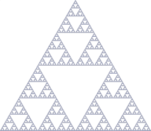

Pascal Hurni phi@cpnv.ch
mars 2014

Une fonction qui s’appelle elle-même
1 2 3 4 5 6 7 8 |
public static void main(String[] args) { infinite(); } public static void infinite() { System.out.print("."); infinite(); } |
.........................
Exception in thread "main" java.lang.StackOverflowError
at java.io.BufferedOutputStream.write(BufferedOutputStream.java:111)
at java.io.PrintStream.write(PrintStream.java:430)
at sun.nio.cs.StreamEncoder.writeBytes(StreamEncoder.java:202)
at sun.nio.cs.StreamEncoder.implFlushBuffer(StreamEncoder.java:272)
at sun.nio.cs.StreamEncoder.flushBuffer(StreamEncoder.java:85)
at java.io.OutputStreamWriter.flushBuffer(OutputStreamWriter.java:168)
at java.io.PrintStream.write(PrintStream.java:477)
at java.io.PrintStream.print(PrintStream.java:619)
at Recurse.infinite(Recurse.java:8)
at Recurse.infinite(Recurse.java:9)
at Recurse.infinite(Recurse.java:9)
at Recurse.infinite(Recurse.java:9)
1 2 3 4 5 6 7 8 9 |
public static void main(String[] args) { infinite(); } public static void infinite(int v) { System.out.print(v); System.out.print("-"); infinite(v+1); } |
1 2 3 4 5 6 7 8 9 10 11 12 13 14 15 |
public static void main(String[] args) { infinite(0); } public static void infinite(int v) { System.out.print(v); System.out.print("-"); if (v <= 4) { infinite(v+1); System.out.print(v); System.out.print("-"); } } |
infinite(0) PILE
print(0) 0
infinite(1) 0
print(1) 0 1
infinite(2) 0 1
print(2) 0 1 2
infinite(3) 0 1 2
print(3) 0 1 2 3
infinite(4) 0 1 2 3
print(4) 0 1 2 3 4
infinite(5) 0 1 2 3 4
print(5) 0 1 2 3 4 5
print(4) 0 1 2 3 4
print(3) 0 1 2 3
print(2) 0 1 2
print(1) 0 1
print(0) 0
Recursion is applied to problems (situations) where you can break it up (reduce it) into smaller parts, and each part(s) looks similar to the original problem. Good examples of where things that contain smaller parts similar to itself are:
tree structure (a branch is like a tree) lists (part of a list is still a list) containers (Russian dolls) sequences (part of a sequence looks like the next) groups of objects (a subgroup is a still a group of objects)
Recursion is a technique to keep breaking the problem down into smaller and smaller pieces, until one of those pieces become small enough to be a piece-of-cake. Of course, after you break them up, you then have to “stitch” the results back together in the right order to form a total solution of your original problem.
Some recursive sorting algorithms, tree-walking algorithms, map/reduce algorithms, divide-and-conquer are all examples of this technique.
In computer programming, most stack-based call-return type languages already have the capabilities built in for recursion: i.e. break the problem down into smaller pieces ==> call itself on a smaller subset of the original data), keep track on how the pieces are divided ==> call stack, stitch the results back ==> stack-based return